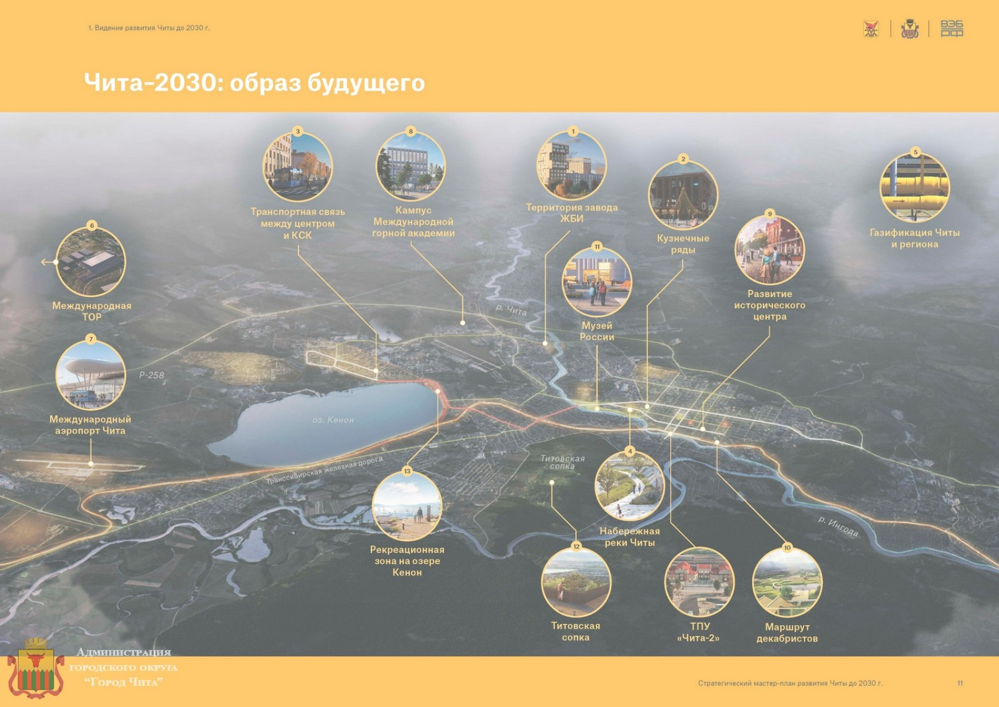

Professional Experience
Professional Experience
Roles, responsibilities, and key tasks from my professional career.
Intern in Software Development
GeoMarketing & GIS Solutions und Services GmbH // Sankt Pölten, Austria
- Developed Workflow for Usage of GIP (road graph data in Austria) with Open-Source Routing Engines
- Established Related Tools, incl. Frontend components, OD-Matrices Calculation
- Conducted Course on GIS-Software for ASFiNAG
- Deployed Solutions for Private Clients, incl. Austrian Post AG, Red Cross Steiermark
Python
Lua
OSRM/Valhalla
DevOps (Docker, Git)
PostgreSQL, PostGIS
(Senior) GIS Analyst
Master's Plan GmbH // Moscow, Russia
- Conducted spatial data analyses for socioeconomic planning in urban areas across 24 projects
- Automated spatial data processing for architects by developing custom Python tools in Jupyter Notebooks
- Created maps, charts, and reports for commercial clients with data-driven recommendations
- Led GIS projects, coordinated tasks within teams, and managed project timelines
- Conducted research on Russian municipalities with consulting on local infrastructure, investment climate, and social services
Python
Jupyter Notebooks
QGIS
GIS Analysis
Project Management
Urban Planning Internship
KB Strelka GmbH // Moscow, Russia

- Supported the development of a master plan for Chita, Russia, through GIS analyses
- Sourced and prepared spatial data from open sources for analyses
- Created planning and visualization maps using QGIS and Adobe Suite
 Master Plan Website (Russian VPN required)
Master Plan Website (Russian VPN required)
QGIS
Adobe Suite
Open Data
Urban Planning